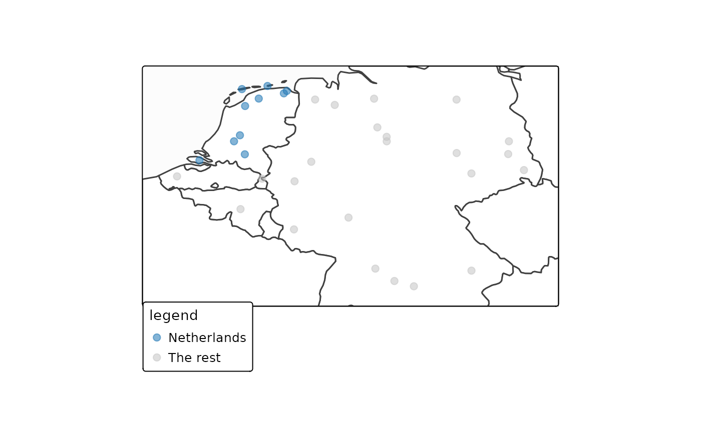

This function creates two separate color scales: one for points to highlight, and a second for the remaining background points. It also creates a legend. This is useful for preparing the data for visualizations such as maps or other plots.
glottospotlight(glottodata, spotcol, spotlight, spotcontrast = NULL)User-provided glottodata
Name of the column that contains the data to put in the spotlights (as well as remaining background data).
Selection of data to put in the spotlights.
Optional column to contrast between data points in the spotlight.
A glottodata object with columns added to be used in visualization.
# \donttest{
glottodata <- glottofilter(country = c("Netherlands", "Germany", "Belgium") )
glottodata <- glottospotlight(glottodata = glottodata, spotcol = "country",
spotlight = "Netherlands")
glottomap(glottodata, color = "legend")
#> Warning: attribute variables are assumed to be spatially constant throughout all geometries

# }